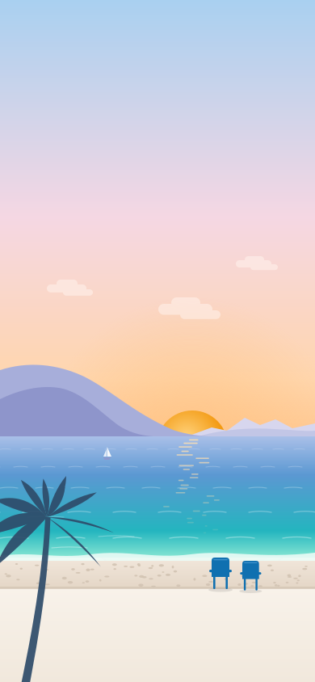
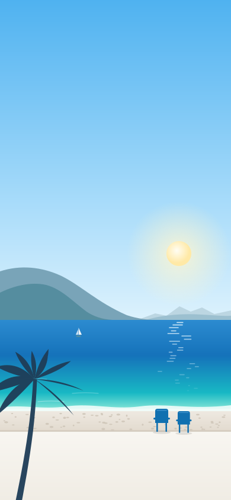
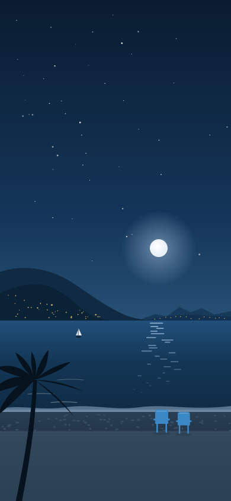
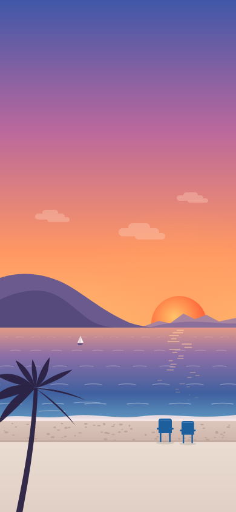

Promo MAPST
Des leçons de 5 minutes sur tes cours, et le planning de la promo toujours sur toi.
Appli non officielle, faite par un stagiaire.
On t’appelle comment ?
Ton prénom ou un surnom, pour te dire bonjour. Il reste sur ce téléphone.

Bonjour Sam
Samedi 7 novembre

Bonsoir Sam
Mardi 24 novembre
Réviser
3 120 XPThèmes
Anatomie et mouvement
Filières énergétiques
Les publics et leurs caractéristiques
Activités d’entretien corporel
Rôle et obligations de l’éducateur sportif
La fiche de séance
Anatomie et mouvement
D’autres leçons arrivent au fil des cours.
Qu’est-ce qui assure la croissance d’un os en longueur ?
La longueur dépend du cartilage de croissance et l’épaisseur du périoste ; plus fragile que l’os mature, le cartilage de croissance demande de la vigilance chez l’enfant et l’ado.
Anatomie du mouvement (CAPA), ch. 2
Sam
Changer mon prénomPlanning
Aujourd’huiStage APEC · AnimaNice
- Lundi 9 novembre
- 9:00 – 12:00
- Structures AnimaNice
- Ville de Nice
Dates clés
Couleurs
Plein, texte, fond doux. Les noms de Nice classent aussi le planning.
Réviser, boutons
Planning, cours
Accueil, série, XP
Préparation
Épreuves, erreurs
Ville de Nice
Libre, férié
Perso, à vérifier
le texte
Texte
Bonjour Sam
Lundi 9 novembre
Aube, d’une heure avant le lever du soleil à deux heures après
Bonjour Sam
Lundi 9 novembre
Jour, le reste de la journée

Bonsoir Sam
Lundi 9 novembre
Couchant, d’une heure et demie avant le coucher du soleil à 45 minutes après
Bonsoir Sam
Lundi 9 novembre
Nuit, le texte passe en blanc